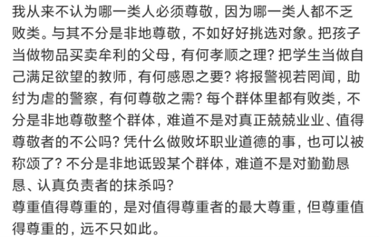
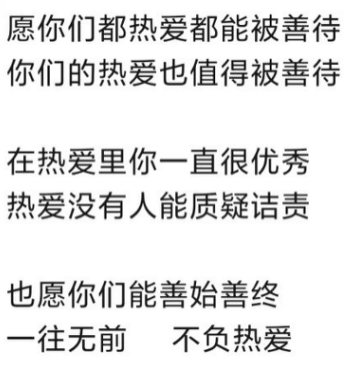
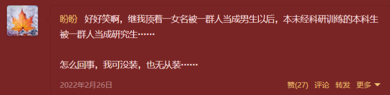
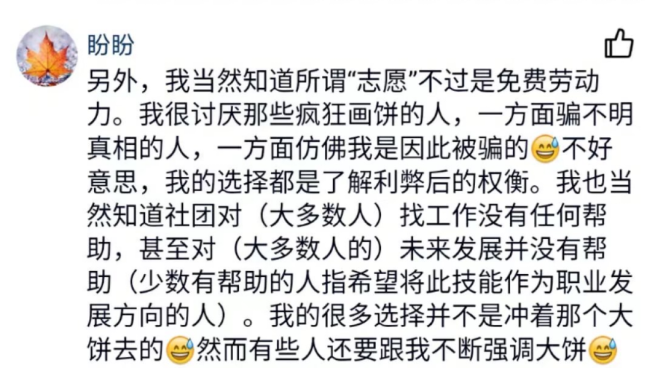
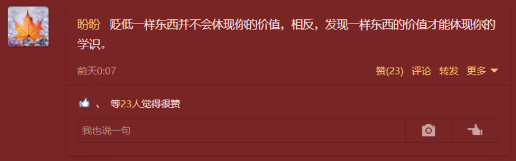
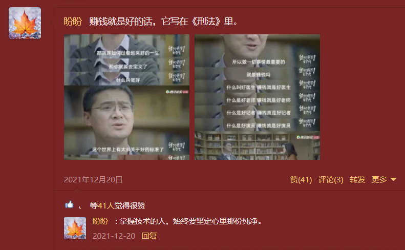
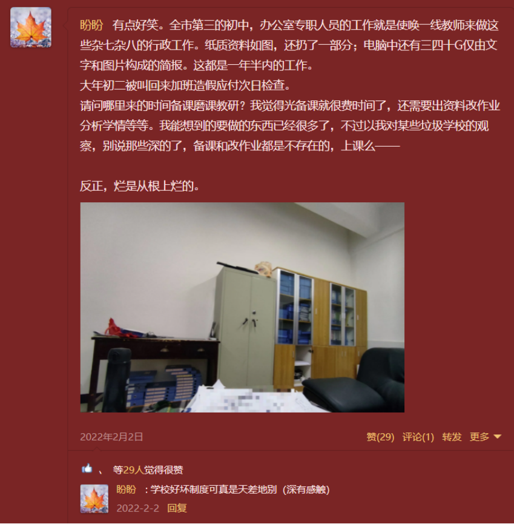

血花
这片平原的尽头是连绵的群山，每座山的山顶都生长着一朵奇葩。蜿蜒向上的路上开满了各自独特的花，愈向上攀爬花朵愈加硕大，芬芳馥郁。平原上的居民需要靠这些花维生，愈是香而大的花朵价愈高，这无疑是个挣钱的买卖。
山顶的花朵无人见过，高耸入云的山峰艰于登顶，亦难以窥探。山上昂首伸颈则只得根据沿途花朵的特征与变化，再加上自己的想象来描摹峰顶的奇葩。
攀登者众，或迷于其华美，或醉于其芬芳，或追逐其价高。价有高低，趋之众寡。山脚有以导路为业者，叙花之清丽，述卉之幽香。然亦有以名利招揽者，追蜗角虚名，逐蝇头小利。
俞乐站在山底抬头仰望――更高处是什么样子呢？她踏上这座山，嗅着芬芳，愈加入迷地往上。每段路有各自负责的导游，规矩也各不相同。
第一段路刚开始认识花，导游不让脱离队伍，自主探寻。可是俞乐还是常常不由自主地向林更深处探寻，提前往更高处走去。导游偶有误入歧途，她也在探寻中找到正确去路，回到正途。
第二段路途终于可以自主探寻，俞乐更是在穿行中无法自拔。沉浸在花香中，徜徉于花海里。
可惜好景不长，前路一片狼藉。
导游在她面前踩踏甚至碾碎花朵，芬芳的空气中似乎飘来一股血腥味。她拼命想往前跑，想逃离这片“血色”，想找回馥郁的花香。可她愈是跑，导游便越是拦住，牵绊着，又不停地践踏着，在她面前揉碎，扔掉。
她知道，高处的花香会更清幽；她知道，远方的花朵会更迷人；她知道，花儿被践踏也不改其本性。但是，她已经在这一片“血色”中麻木了。她看不到远方，她逃不出去，目之所及是残花。花儿依旧迷人，她却再也无力追寻了。
终于走到下一段路了。她兴奋地看着一片花海，小心翼翼地踏足。可是无论她怎么靠近，企图回忆其芳香，却始终有一股血腥味传来。这股味道不止伴随着这一种花，似乎如影随形。她越是靠近，这股味道却越是浓烈――似乎，是从心里传来。
她贪婪地深嗅着目之所及的花朵，却越来越窒息，一阵眩晕令其倒下。“花还是那朵花，只是我无法再感受它的芬芳了。”醒来的那刻，她悲凉地想着。
后来的路，她只采撷其他花朵送予导游时不知不觉踏入深林，而花的种类却不定。大概是看哪位导游自带的芬芳能盖过淡淡的血腥味罢。而通常，只是麻木地跟在最后，在无数人踩出来的路上如行尸走肉般前行罢了。
她想忘了那朵花。只要不靠近，便闻不到那股浓烈的血腥味。但是有一位导游，却注意到了最后的她。“这花多香啊。”“这样跟着不够，要主动采撷路边的花朵啊！”导游不提这花多值钱，但一直让她采。俞乐看着手中的花，血腥味愈加浓烈了。“但是她身上的芬芳好迷人啊！”俞乐想着。渐渐地，她开始强忍着令人作呕的血腥味踏入深林，捧回的花朵越来越多。她一边享受着这久违的感觉，一边对抗着反感的血腥味。
可是一旦离开了那位导游，俞乐又回到了路的最后亦步亦趋的样子。她知道林深处很美，但她难以对抗那令人眩晕的血腥味。
最终，她放弃了这座山。她选择了相邻的山――或许还能稍微窥探到这边的景色吧？她想着。后来的路啊，导游甚至带领他们往深林处走，也鼓励自主往前探寻。
她兴奋而落寞――那股血腥始终萦绕着她，而她也再难踏足……
烂尾了。因为懒得写了，越写越不想写，越写越草率，还有很多没写出来，就这样算了吧，算了吧。比如开头埋的伏笔，后面也直接放弃了。
大概是想要对应又要一遍遍地回忆细节，但完全不想回忆这种回忆吧。大概之前发过的同意象的说说算是一种补充了。
（找了几个，不全，实在太多了……）
稍微解释一下……算了不想再重复回忆这破事儿了，直接贴之前写的一个解释吧，情绪和逻辑都不大好，因为真的很生气很难过，而且我但凡什么时候稍微认真学点觉得某个内容有点意思就会被迫想到这事儿（大三上期末“预习”的时候就是这样，所以才会突然想写这篇并无章法随心所欲的“文章”）。大致浏览了下，语无伦次但想说的基本都提到了。本来想整理一下顺序和表达再补充一下的，但真的好气啊好气啊好气啊不想再回忆。补充其实本来是想补充基于其中每件事提炼的看法的，因为毕竟文段带情绪，但绝对没有夸大！！！本来补充也还想补充当时场景加限定词的（求生欲，怕被骂），但是不想再主动想这破事儿了，有疑问可以提，虽然估计也没人看。
我极其看不惯他对于不了解的东西先是贬低以及自己能力不行就去无端指责其他优秀的老师，欺软怕硬指使学生，还有根据答案凑过程，根据答案改题目等等践踏数学的行为。动不动还说这老师学历没他高那老师学历没他好谁谁谁不是专业对口，我知道这个学校很多老师只是专科或三本学历甚至还有没有教资的（别问我怎么知道的，合法公开信息获取与处理分析），那也比他好！！！没有实际能力就只能学历压制。怎么会有教师拿自己靠作弊毕业洋洋得意还意欲教学生的啊？？？初中数学教师高中数学不及格很理直气壮？初中考上了高中升大学直升班，玩了七年大学靠作弊毕业很骄傲？专业不对口，嫌弃自己教的科目混日子很自豪？我心甘情愿帮其他老师做事情就把使唤我当理所应当（让我帮他备课还说这本来就是我应该做的事情，每次让我帮他干啥，明明没做错但非要凶我一下骂我两句，有病？？？），备课改作业还有私事啥啥的，就差帮他领工资了吧。拜托，我帮其他老师改作业他们自己也在改，并不会我改作业自己在旁边玩电子游戏……也没有谁让我帮忙然后把这事儿抛诸脑后做无用功，也不会离谱到说什么这本来就是我的工作。更不会自己喜怒无常动不动迁怒学生，还指使学生去对付其他老师。让学生去打其他老师（虽然是轻轻“打”，但我还是认为极其不合适）这个直接是我拒绝班长职务的导火索，虽然他并不肯，但基本上后来他让我干啥我都是直接拒绝。哈哈哈这就是欺软怕硬的人吧，把礼貌当软弱，就不配获得尊敬。怎么会有班级班主任和班长天天上课吵架班主任还不肯把班长换掉的啊。哈哈哈自己心情不好就乱拿学生出气，直接怼回去反而学乖了嗷。刚开始我问问题直接赶我走，后来态度倒是挺好，但依然形式主义，还不是啥实际的没有，真好意思啊教师对着教材例题说“我不会”把学生打发走。当然小人怎么会变呢，不过是装样子罢了。恶狠狠地想把我退学，但是说什么“看在科学老师的面子上”（我是科学课代表），不能就不能啊扯什么扯。当时他教务处副主任，我和科学老师关系挺好，科学老师教务处主任，和历史与社会老师关系挺好（他甚至考虑到我高中选文科想象未来一片大好……救命我历史作为长这么大唯一一门从未及过格的科目我去选文科那不是找死吗……可能是我上课搭话太积极，可是老师真的没有发现他说的其他的我都能接上但考试考的都不会吗T_T真记不住啊呜呜呜），历史与社会老师副校长，校长也对我挺好，虽然我和他不熟……多半是因为成绩。所以为什么在那个任何学生和老师起冲突第二天直接退学的学校，我能和他当着一群老师的面吵架但老师们只是笑。他 真 的 不 配 为 人 师 。笑死了其他老师处理问题学生的时候他在旁边笑，这种情况只有他一个人生气也是报应吧。在他看来，做任何事都是装样子虚与委蛇惺惺作态就好了，所以后期他各种对我假装示好，但我只觉得恶心。本职工作都晾着不做，搞这么多有的没的只觉得恶心。谁跟你是“自己人”。服了使唤不了我就假装是科学老师让我怎么怎么样变相使唤，怎么说呢当时就是懒得多费口舌，事不大（但是导致我经常淋雨中考生病很严重）就算了，这要是高中我直接就说破找本人当面对线了（因为干过，高三的时候，真离谱啊一到毕业年级就一堆破事儿，高三就更离谱了，但我懒得抗争了已经，直接玩了一年……），然后他还要假装科学老师又各种恶心我……好家伙一箭双雕了属于是，又恶心我又抹黑科学老师，可惜了我根本没信，自己自导自演有意思吗？而且，作为一名教师，不说正确引导，至少别挑拨离间恶意造谣吧？挑拨离间我都懒得说了，恶意造谣这个……正常师生间如果有什么不对的苗头都要往正向引导吧？好家伙他这直接反着来。我不过是当科学课代表，然后比较喜欢老师，问问题又比较多罢了。每次我去问科学老师问题，只要他在场，眼神都是溢出来的嫉妒和恨意。明明开学初我对谁都是小心翼翼的，是他自己把礼貌当软弱还好意思要求我“博爱”？“乡原，德之贼也。”
（《论语·子路篇》13.24）我还是那句话，对谁都有情，那叫滥情。说我无情，你自己看看你的无理要求对我有没有情？
这也就算了，他恨他的我无所谓，我小心翼翼地避免任何肢体接触、注意言语行为，然后他搁那造不合适的谣（任何谣当然都是不合适的，这里的不合适还有不合适说的意思，大家想想也就知道大概是什么了，当年科学老师孩子都上小学了，当然就算单身也极其不合适哈，造这种谣就纯有那大病），同学间乱传我也就不说什么了，这个东西我也不好断定是他传的，但是传到别的班只给我代过一次课但那次就认识我了已经离职的老师那里，着实有那个大病。听说那位老师小心翼翼又谨慎措辞的疑问之后也大概知道他传成什么样了……哈哈哈正常老师是有不对的要正向引导，他直接是没什么问题的添油加醋，真行啊！
真的好气啊他动不动就要贬低一下的老师还动不动就为他说话！！！如果真的是他们本身有什么问题，或者即便是误会但他带了具体理由我都还能接受，但他完全是毫无根据的评头论足。

而我确实抵抗与斗争了一年，从委婉讲道理到强硬讲道理，用了许多办法，然而……颇有种老舍先生笔下祥子的感觉。哀莫大于心死。
可能要有人骂我自己不学就知道怪老师了哈哈哈，讲太多次了，不同形式不同角度，前面截图里也有提，懒得再说一遍了，这里随便放一段之前写的，估计里面几个例子又要有人跳出来说我无差别攻击若干个群体了，那我就没话说了，我不识字瞎按的。

（2019.1.20下午）这里是不是应该用“不止”啊？“远不止如此”。虽然我现在也没看懂这句话……
实际上即便其他行为如此离谱，但我都可以忍，我最无法忍受的是对数学的践踏――强词夺理、瞎编硬造。看着答案凑过程这种东西，我都不说未知的哪来的答案去凑了，就算是考试这种有标准答案的也不至于考的时候就有答案吧？不过也算和他作弊一脉相承？真正先有结果再有过程的或许是对猜想的证明，但这里的证明也是有理有据严谨缜密的，不是他那样的每一步都站不住脚装装样子。而且真要到正经证明他反而不会直接跳过了，哈哈哈，这就是他的“数学”。真要把该证明的证出来呢，又要被他指责把注意力放在没有意义的事情上面。哈哈哈，压轴题没意义，作业题没意义，课本例题没意义，阿谀奉承最有意义啦！为了考试去猜答案我不虽不赞成但也没有意见，毕竟应试教育。但正常老师即便如此也是平时脚踏实地学，考试实在做不出来再有套路地猜以拿分。他呢？哈哈，平时就不正经学，平时就光学怎么猜答案了哈哈哈，然而他猜得也不怎么样啊。
为什么无法忍受这个呢？数学最吸引我的地方就是它的严谨，然而这一点在他面前荡然无存。在那之前我是个能走路上想数学问题踩水坑撞墙的人……虽然老师直接给定理我问证明老师只是让不要纠结这个，但我证出来去问她对不对她也只是无奈地笑笑说是对的。虽然作业本答案给的不能证而老师又举不出反例，只说答案就是不能证，但我想了一晚上（其实想证明不久，就是想证明有没有问题比较久，刚开始还是自己推翻了一个，想到后面的那个以后就一直想有没有不严谨的地方）第二天去找老师说证明的时候老师还是认真思考了我给的证明的。所以还是挺喜欢她的嘿嘿。PS：老师想了挺久，没想到咋推翻……这段讲的是初二。
当时我可景仰保罗·爱多士先生了，具体传奇人生可以自己去查，包括诺依曼、图灵等等大神的传奇人生都很有意思。我对爱多士先生印象最深刻的事情莫过于半夜三点打电话讨论数学问题，只因对方此时必定在家，以及医院病床前数学家们络绎不绝。爱多士先生真的强！！！病床前三组人讲不同语言不同问题，可以无缝切换讨论……
这里打×的是上一个话题的内容，其实就是前面发了后文的那张微信聊天截图。上面这张和下面那张中间少了讨论聊啥的内容哈哈哈哈哈哈哈哈哈哈聊啥就不放出来了，我这水平也没啥好聊的……

羡慕爱多士先生终其一生是在为热爱的事业而奋斗，工作就是热爱的事业，而不仅仅是工作。从景仰其对数学的热爱以及羡慕能作为终其一生的追求，到景仰及羡慕终其一生对热爱事物的追求，到最后景仰以及羡慕有所爱……当时觉得皓首穷经是一件快乐的事情，当然现在也认为，只是现在没有东西能让我这么做……当年翻开的《九章算术》和《几何原本》，现在早已蒙尘，成了摆设。“朝闻道，夕死可矣。”然而能让我“夕死可矣”的“道”现又何在呢？哦，现在无所谓道不道的了，反正无所求，现在死也可以……
我知道原意并非如此，《娱乐至死》我也看了为什么仍然这么用，后文有提（在某个部分的“注”里面）。我放在这里的断章取义的理解是，憎恨的会远离，也不会受到很大影响，反而是倾尽心力的，影响深远。
当年走在路上都在想问题，现在数学课都不想讨论数学；当年形象的语言想用数学语言表达，因其严谨简明美观，现在看到数学公式就烦；当年看啥都想证，非要有证明不可，现在看到定理完全不想看过程；当年推导一定要有依据，现在凑合差不多就行；当年一天睡3~6h，可以三点起，现在只想长睡不复醒，逃避现实……当时颇有种“生前何必久睡，死后自会长眠”的感觉，而现在，我此时就想长眠。

笑死，倒也不必这么咒我……谁没事想去住院啊喂！人家那是时刻想着数学，直到生命最后一刻（虽然住院也并非生命最后一课，做角膜移植而已），不是住院了赶紧讨论个问题作秀啊！要讨论问题现在就可以讨论起来了！讨论啥住院啊哈哈哈哈奇奇怪怪。
说起来半夜讨论数学题在那会儿真像我能干出来的事儿，不过我不会直接打电话嗷，还是会确认对方时间以及意愿的。不过那会儿不自由，不可能半夜还能联系上别人。但路上想问题遇到老师直接问这事儿确实干过不少……甚至导致某位老师有段时间路上远远看到我转身就走……咱也不知道为啥路上老遇到她，可能是学校太小了吧……
随手翻了个日期就又看到了爱多士先生，属实是执念颇深了，实际上这篇东西前面的部分都是不断萦绕的东西。既然挥之不去，那就随便写下吧。
（2019.10.4晚）没看到是我孤陋寡闻，执着追求一生所爱的人不少。不过像爱多士先生这样弄洒果汁只因不知开了以后不能横放的倒也不多见哈。

（2019.10.22早）“面朝大海，春暖花开”了属于是。
其实被针对不止是初三，但只要不践踏数学我就无所谓。比如初一的时候（这位老师就是那位没有教资的，而且第一周上课全程是代课老师的姿态，就是只过来代一两节的那种感觉，但是她带了我们一年啊……）我就因为考得比课代表好被针对……咱也不知道这有啥好被针对的……课代表不是自己主动的，也不是老师选的，是班主任定的。就为这针对我我也是很不理解。而且班长（也是班主任定的，而且还是关系户）考不好罚全班抄试卷二十遍哈哈哈，有何意义？那张卷子，另一位老师带的班最高分80+，班长70左右，我100+，另一位老师惊讶我的分数的同时我还得为别人买单抄20遍试卷哈哈哈，而且不是说说而已，一题一题一遍一遍数，每个人数过去，一本本子根本抄不完，而且还周五放学留下来抄，抄了几周以后还一直查，笑死了晚上一个电筒四个人抄这没有用的东西，浪费大量时间精力啥也没学到。另外我找到之前写的关于初一的东西……

写于2019.3.11晚，我高三，当时因为想到别人没想到的问题被老师夸，突然就想到初中这事儿，遂作此。“专业带人进沟”这梗就是初一数学老师带的，上课老提，即便是她不教我们以后还是我一问同学把同学问不会了就责怪我将其带进沟。明明就是知其然而不知其所以然，以为自己啥都会了，经不起问还怪问的人。概念不清，过程不明，原理不解，逻辑不白。但是吧，这些事儿过去也就过去了，因为也没有那样践踏数学。针对我个人倒是问题不太大。
其实无论是在那之前还是在那之后都遇到过更离谱的“教师”，什么上课追剧不上课不准自己做作业必须按照答案抄然后自己改了应付检查啊，什么肆意造谣毫无逻辑站不住脚满是漏洞却趾高气昂啊，还有不断骚扰女老师女学生的……等等等等，太多了。我觉得说什么学生怎样和老师没关系就是瞎扯，那为什么要评比教学质量？怎么不让自己的孩子去师资薄弱的学习？为什么要争着抢着买学区房？好学校的门槛高，遇到这种人的概率会更小，但更多的，我认为是制度问题，互相牵制避免了一手遮天。提到的这么多离谱的“教师”，都是在当地最差的学校。这就是最差的学校的教学质量，是外面女生跑男寝过夜的学校，是校园暴力拍扒女生衣服视频上传的学校；是无所谓旷课但迟到就去扫厕所不让上课的学校，是上层骄奢淫逸打压一线教师和学生的学校。当然，这学校一线好老师也不多就是了，这种地方但凡有点追求谁愿意留啊？初中那所学校我觉得比较好的老师无一留下，陆续考走了。呃，扯远了。
这里放一点高三写的东西：
（2019.3.14夜）
写于2019.3.1中午，开头的“暴论”说啥“没有证明，数学什么也不是”其实想表达的是数学需要逻辑性与严谨性，而不能随便猜说感觉是就是，不经过严谨证明就随意论断哈。“数学不同于科学”那段想表达的是数学是纯理论性学科，许多东西都是人为定义的，在此基础上推导。而科学是建立一套理论来解释物理世界，以实验为基础，验证理论、修正理论。“教资的随意性”是因为当年师范生是不用考教资的（但现在都要考了），然后有的不合格师范生也拿到教资来害人。教资这段不用在意，就是句气话罢了。数学和科学这段只是我浅薄的理解，敬请指正。
比他离谱的人还有很多，无论是教学方面的还是师德方面的，但只有他留下了最深刻恶劣的影响，原因无非是其他人教的并不是我喜欢的科目，即便是觉得不妥感到不悦，即便是反抗斗争，也不会感到所爱被践踏的那种巨大的痛苦，另外遇到这种不喜欢的人就远离，即便当时影响大，过去了也就过去了，当成段子讲也能仿佛置身事外。但是！当时他是班主任，我是班长，即便我天天上课跟他吵架，他就是不愿意放过我。而且我还是有实无名的数学课代表、纪律委员，有实有名的语文课代表、科学课代表、寝室长……笑死，当时两个课代表都是对应老师定的，然后他跳出来说不能当俩课代表，时间不够，太影响我了balabala这话本身没什么毛病，但和他后续所作所为联系起来可就太有毛病了。也就是到两位老师面前装装关心学生，结果去找了老师老师不同意换，还是我当……嘿嘿嘿语文老师和科学老师还是挺负责的，如果老师都这样我可以当全科课代表~咳，扯偏了。反正即便是两个课代表，也就是收收作业，可能有时帮帮啥，都没啥大事。合起来也没他自己一周搞的恶心事多啊，哈哈哈去装关爱学生然后回过头来疯狂压榨。再一个是他疯狂打压，一个是自信心问题，一个是也渐渐无所谓知识本身以及寻根溯源了。初二的时候任何科目即使是我没做过的题也都是可以直接上台拿起来就讲的。哈哈哈，初三，我讲对的都要被骂，罢了。他自己不会，我上去讲对了也要被骂，哈哈哈，好，过程不重要，推理不重要，大题也是猜个答案就好，nbcs。
初三那年给我的感觉就是：
（万能青年旅店《杀死那个石家庄人》）
（柳爽《漠河舞厅》）
注：以上两首歌我都了解过其时代背景与背后的故事，但我觉得文学艺术除了其本身表达的意义之外，其提炼出的内容是不是也可以用于原意之外的描述呢？一千个读者有一千个哈姆雷特。或许可以不用拘泥于原本的故事吧。了解原本所描写的内容加深了对原作的理解，帮助理解其表达与想呈现的思想和意义，了解本原也是对作者的尊重，防止误解。但了解原意之外，使用或许可以不必局限？就像各种成语典故的比喻义？语言在随着时代发展。当然这只是个人看法，也就私自这么用了。自己表达能力不够，只能拾人牙慧了。但我真的觉得这两句非常精准地表现了我的感受。另外，前文后文将会提到的《娱乐至死》选段也是同样的看法。我会解释了我为何这么用，但同时也知道其原文是想写以电视为媒介的时代使人们丧失独立思考的能力，娱乐至死。还有《百年孤独》选段，也是同样的看法。
（薛之谦、岳云鹏《醒来》）
可是我的行李在何处呢？城堡倒塌、小草枯萎，斗争停止……当然不值得。但也连追逐的梦境都没有了。
我始终认为，“畏”是出于“敬”，无可敬则无所畏。所以我最不怕的就是他。我认为“尊师”是因为“重道”，他自己都把“道”（此处泛指，并不仅仅指原意中的道德规范，也指“朝闻道，夕死可矣”的真理、知识等）贬得一文不值了，他有什么可尊敬的？个人认为尊敬师长是因为其品格值得学习，尊敬知识尊敬付出尊敬传道受业解惑等等，他做到啥了他有什么可尊敬的？学高为师，身正为范。他配哪个？学他什么？狼狈为奸？怙恶不悛？挑拨离间？两面三刀？虚与委蛇？惺惺作态？反复无常？颠倒黑白？所以有什么不敢拒绝的呢？本来就是不合理要求。不拒绝甚至乐意效劳那是出于“敬”而不是出于对这种权力压制的“畏”。觉得我会帮别人就把我当工具人……算了，也符合他把礼貌当软弱，把学生当满足自己控制欲的工具的一贯作风。因为无能，所以只能通过这种无意义而下作的方式体现自己的“威严”。（哈哈，这个不止说他，高三那学校的其中一批人也是，因为无能所以只能无理却又趾高气昂，也是同样的谄媚与欺软怕硬，同样把礼貌当软弱，果然是蛇鼠一窝。说是“其中一批”，因为好老师也是有的，但这种环境下，好老师只是被欺负的对象。而且也是少数）也不配获得真正的敬意。不过这对他来说也不重要吧。PS：韩愈先生的《师说》真的永远的经典！！！写得太好了，什么时候都不过时。我觉得“身正”比“学高”重要太太太太太太多了。
当时笔记截图中内容是12.1和高中老师聊到↓做的解释。（对不起我不学习我忏悔）
PS:我收回上面说想做实验的话……计算机实验每一次对我都是一种折磨……while（code（bugs））暴躁值++；
但无论多么精妙的理论，终究是要靠底层代码实现的，是代码让理论成为现实，而不只是虚无缥缈的幻影。
一些看起来精妙的设想同时也可能会让人感到虚幻――怎么可能？但是具体的算法与代码实现就会让人感到这么神奇的东西真就存在，而那些看起来飘忽的特性在原理下显得理所当然。所以原理和底层代码实现等都是举足轻重的。
很多看起来不可思议的神奇的效果，在底层数学计算上显得理所应当，数字与人的感受之间建立起了奇妙的联系。底层逻辑、数学原理等等真的很有意思，虽然我还是不想写bugs……
其实也倒没有爱学化学，只是不排斥罢了，再加上每周回家都一直在查相关资料，看习惯化学了吧。
突然翻到之前抄的查到的关于某个问题的资料，好家伙，有好几个来源，还筛选掉了扯淡的部分，按照可信度排序，还有一堆相关信息，比我现在强……
初三之前我是无所谓老师的，纯是爱学习。因为当时环境只有学校是唯一讲道理的地方，所以很喜欢学校，而且喜欢刨根问底，渴求知识。虽然最喜欢数学但当时还是每门课都很认真的，后来就……摆烂。化学是属于爱屋及乌了。怎么说呢，我老觉得我自那以后就没学习了，一直在摆烂，最多就遇到喜欢的老师学两下。我下意识是觉得自己不听课的，但仔细一想好像是听了的，还是有点老师上课的印象的……看到上面老师说的突然反应过来……可能是对我来说主动学习才叫学习吧。随便上上课完成作业对我来说其实不算认真学习了。课后主动去查找不懂的东西的资料，深入思考，弄懂细节才算学习，但是即便是我上学期学得最认真的一门，我看着PPT仍然是没有任何一页敢说完全懂了的。呃，不过，一个导论，都懂也不现实。我最摆烂的地方可能是，放弃思考。放弃思考为什么，所以什么都学不到。但也习惯了拒绝思考。

上图最后一段是我对真正认真学习全身心投入的看法，也只有这种状态对我来说才真正算学习。所以我一直觉得我不学习，所以才会有下图。其实如果说要不上课不做作业才叫不学习的话，我属于学了但没完全学吧，结果和没学没多大区别，没有主动学习和深入理解的过程，仿佛学了但其实啥也没学会。学了个寂寞。
高考之前，一共只有两年是在我自己选择的学校读书。只有这两年是我自己考上的，当时为了生源对初升高有限制，禁止跨县。从当地最差的初中考到了当地最好的高中（其实也不算很好，只是个县级市的一中。和各位大学同学的高中比起来还是十分渺小。但相对而言是我高考前读过最好的学校了），中考出成绩的第二天就报到，第三天直接开始上课……想着终于离开那所初中了，那叫一个高兴啊，重新开始学习数学了，然后……然后看了十几页，越看越难过，然后就转去看物理了……然后就一周把物理必修一看完了……其实高中数学书我初二就看过，感觉不太难。但问题是，初三的我翻到我小学试卷都不会做了。其实初三也没学什么新的，我为什么会总开学的115+到最后六七十？（呃，这里数字表示不统一不太标准，但反正全篇都是流水账就随便看看算了哈，其实有些地方有病句啥的，因为不是正经发表文章就没那么严谨，对不起，不应该，但是摆烂了）知识都是学过的，但我个人认为，数学不是知道知识点就能做了，毕竟不会的开卷依然不会。初三之前……其实我经常提前做作业，一学期就上四章，老师这章没上完我下章作业都做完了，而且只要不出现新概念都是直接看题现推不看书的（对不起，不看书这点不应该，我发现我现在都这样呜呜呜，还是多看教材比较高效，思而不学则殆），然后有时会用的方法和书上不一样，但是直至现在我都不觉得我当时用的方法有什么问题……甚至高中数系扩充后我都觉得没啥毛病……但是摆烂以后别说推导了，现成的都不会用，送分都不要，能及格也是我没想到的。
长截图中也提到了我不想做科研的原因。个人认为，研究生嘛，就是做研究的。个人理解的做科研需要求知的好奇、求真的毅力balabala 6C啥的。其他的不说了，反正我现在也无所谓事物本真无所谓真理无所谓本质如何，爱咋咋地我不关心，就这我就觉得读了研才是浪费资源呢，当然我也考不上哈哈，我不配。另外，我知道硕士研究生分学硕和专硕，现在工作对学历要求高，很多同学只是冲着工作竞争力读的研，前面那句话只针对我自己，你能考上就是你应得的，没有什么浪不浪费之说，本来就是正当竞争，所以前面那句话只是说我自己！！！！！
另，附大一写沟课截的6C：
另外，做研究的话，英语绝对是必备技能（汉语言文学等等特殊专业不算哈），否则如何与国际接轨，了解最新动态？再加上我是学计算机的，计算机科学的理论推导都是建立在数学之上的，就我这数学水平……看到数字符号完全不想继续看下去哈哈哈。
嗯，总的来说就是我不配。为什么要说这个呢？其实算是回答一些人吧。我不配。
（2019.10.16午）就我现在这摆烂的样子，对不起太多人了。

另外，劝我读研/认为我适合读研的人和以为我是研究生的人真是不相上下……一般研究生是不是会称“导师”或者“老板”啊？我就是平平淡淡地记录一个废物大三本科生的摆烂日常罢了……从未提过前面的两个称呼也没提过科研、课题、组会啥的，我也不知道是咋在多个平台给不少人造成的误解……而且我在这些平台也不活跃……一共也没发啥内容，不比空间……

再说说为什么写这篇东西。上图中的“那篇文章”就是这篇。谁能想到我一拖再拖，为了避免自己又拖几年不了了之，把它放在紧急且重要的事情前面，结果连续写了两周都没写完呢……而且无构思无润色全是流水账写的什么乱七八糟有的没的，还动不动就懒得写找以前的东西凑数……
解释一下上面的内容，按照换行分段。
第二段，其实有学弟学妹问我我都会首先问未来规划，然后根据规划建议做什么，推荐相关组织的。说实话，我不是沸点的但我推荐沸点比推荐我在的协会都多。只有确实对某方面感兴趣或者就是对协会感兴趣的我才会推荐相应协会。我不认同我们院在一入学就频繁禁止加入社团的原因，不是我多支持多鼓励大家加入社团，我只是认为应该给大家自主选择的权利。我个人觉得，可以阐述利弊，但最终的选择权还是在个人。即便是春秋笔法都比替别人做决定好。可以不建议加入社团，但是禁止……呃……我个人不太认同。实际上我不认同禁止加入社团的同时，也并不认同所谓“大学不加入社团怎么算大学生活呢”此类论调。在我看来二者没有区别，不过是站在不同立场，但都是替别人做了决定。哦对了，院里禁止参加社团，还强制参加院内活动（行政分），哪个浪费时间我不想说。
实际上，如果非得让二选一，非说二者不能兼得的话，我个人还是觉得选择科研或竞赛会好很多。像第四段说的，可持续发展的话成果与证书当然比“浪费时间”的活动好。为什么这个“浪费时间”打引号呢？因为我个人觉得，只是对于仅仅是为了未来升学或工作考虑的同学来说，这是“浪费时间”。因为它确实对面试没有意义。我个人觉得，说什么社团啊学生工作对找工作面试有多大用的都是在画大饼，我很烦这种给我画大饼的，包括志愿活动这些也是。
（2022.2.9下午）
人家招人是为了增加经济效益的，不是招来搞事情的。技术和能力才是硬道理。所以我觉得认为我有这么多所谓经历就能进大厂的也挺天真，有项目经历差不多，有这些毫不相干的有啥用。所以我会反对说什么一看到专业就说毕业以后就如何如何，无论什么专业，混得好的前提都是学得好。
实际上我之前写过我对于科研和社团的态度：
社团对我来说就是这条崎岖、道阻且长、不通的路。至于为什么，等我毕业再骂。虽然能力才是硬道理，但对于我这种不学无术的人来说，没有证书我啥都不是哈哈哈。在我看来，所谓“坦途”不是说它轻松，而是受支持。没有哪条路是轻松的，但受支持的话可以不必把精力花在与事情本身无关的无意义内容上。并且，至少你努力的成果是会被看到的，无论完成得好不好，不好也可以被指正改进，有进步的方向。而不是无论你付出了多少、完成得好不好，都被看也不看扔进垃圾箱。是否受支持也是视环境而定的，比如我初三学习数学就不受支持，哈哈��。
对了，上面第四段，虽然我觉得证书称号这种东西不能完全说明能力，但个人认为，各种证书，实际上是第三方能力证明。不可能每个单位都去探每个人的底的，此时就需要第三方机构提供可信的能力检验结果了。至于为什么我说科研更重要却不选择它，前面说过了，一个是对学习的抵触，一个是为什么不配做科研。我选择社团不过是因为，学点什么总比躺在床上玩手机睡觉好――反正我也知道这些时间我不会拿去学习。也总比闲着空想人生的意义然后感到没什么意义好，所以我一般拒绝思考这个问题。
（2021.11.20午）
（五月天《咸鱼》）
有闲心去研究如何长生不老的人，其实是有钱有闲又过得很好的吧，像我就只愿“吾生须臾”，不羡“长江无穷”。
一般人没有退路会奋发努力，但我为什么不呢？有个词叫“亡命之徒”（？）
开玩笑哈哈哈开玩笑
（2021.9.29 00:19）
做社团从艰难起步到有人主动合作这个事还好理解一点，有人找我组队竞赛，甚至有送上来的课题可就真的太惊讶了，但我都拒了……原因是不能耽误别人。不管社团还是别的什么我都谨慎参加，原因是不想干一样废一样，虽说现在看起来好像……确实如此了。所以我现在即使没时间也会去赶夜场，其实也没练啥，也没人要求我必须一周出勤几次，平时约轮也都是随缘约，但我觉得还是尽量去吧。哈哈哈，大半夜的有人在实验室做实验，有人在敲代码，我在二运瑟瑟发抖。
社团意义就不重复说了，反正如果都各司其职认真负责我根本不会有这个想法，而如果某些人摆烂摆得明显一点不装模作样我也不会去试，现在就是大本钟下送快递，但开始了又不得不继续，因为还有人在期待着，所以我也被迫在学相关知识……很多东西连想找个参考都找不到，找不到资料只能自己整理，建立自己的体系。


之前有人采访我，我知道大家想听关于热爱的热血故事，但真实情况是，对于我来说，已经没有什么是不可放弃的了，我只是不希望别人也被迫放弃而已。这种事情，谁来都比我强吧，只不过是大家都有更重要的事情要做，只有我不务正业罢了。所以很多人谬赞了。
我个人觉得的真正的浪费时间是，什么事情都仿佛做了却没认真去做，比如我摆烂以后的学习（bushi）。我并不认为社团或者说爱好就是闹着玩，这就是我为什么找不到资料去尝试自己建立自己的体系，试图查文献了解更多更深的内容――虽然对我日后什么用都没有。前些日子看到一位up主的视频，讲的又是我不感兴趣的领域，但是我看了他很多视频，因为我非常认同他的思想。即便是一个爱好，他也在努力做英文翻译为中文的规范化，他在每一个部分建立自己独特的体系并且在教新人的时候也不是直接告诉他们应该如何做，而是教他们可以从哪些方面去看，教新人建立自己的体系。我对他印象最深的一句话就是，只有这样才能够不玩物丧志。是啊，有些人玩物丧志，有些人玩物都能玩到顶尖。不过由于我不感兴趣那个领域，而他讲的又实在太长了，很多视频我都没看完……基本上是看个开头结尾的思想部分，中间专业部分就跳过了。
我个人觉得，既然要成体系，就要知其源流、现状与发展，而不只是随便了解现在的一些技术应用就行。对此我之前也写过……写的是啥不重要，反正我最后引出的时候也不止建立于此。完全可以脱离象棋本身去看。（反正我象棋也没啥水平可言）
知源流，晓现状，观发展。这是我认为系统学习一个知识很重要的东西，而不知是仅仅了解技术，知道应用。不仅仅是体系化知识，还有理解文段等等，比如常说的：知人论世。
讲讲没讲完的那个截图的最后三段。校报那个，因为本就是受到支持的吧。就比如这次书展，有图书馆支持，这么不务正业的都能上我们院官网“学生园地”栏目……而且宣传得很广泛，有靠山真不错，太省心了，好多事情都不用自己干……就像校报那个，估计也是老师找的刊物/比赛，学生只要写，其他都是老师解决吧。但我更多情况是像最后一段那样，只能自己走。
其实从小学开始就不务正业。当然，摆烂之前的“不务正业”在现在的我和当时的我看来都不算不务正业，但在当时的环境看来是真够不务正业的，每个阶段都没在干那个阶段该做的事情。小学我每年都会订四五种刊物，虽然是学习相关的但我不觉得那算“教辅类刊物”。我个人其实不太喜欢教辅类内容。比如我最开始是小学二年级订《趣味语文》《趣味数学》之类，前者就不说了，我忘得差不多了……后者曾经在文章中穿插许多有趣的数学知识，还有密码内容。说它是教辅，谁小学课内学密码？？？虽然那个所谓“密码”极其简单，随便猜……但我觉得这种东西就是个引导，真正要学啥还是得自己去系统了解的。（包括我觉得即便是上课，很多东西都只是引导，老师不可能教全面的所有东西，在课内所学知识之外，深入去学习自己感兴趣的方面。真正的学习是深入的自主学习，只是被动地听是不够的。最近听到啥“恶意自学”，感觉很扯。不过嗷，即便是我现在在读中小学，对我也没啥影响。因为所谓“恶意自学”，下架的是中小学辅导类课程，我获取知识查找资料从来不靠这些……）前些日子我又去看了这本杂志，无数次改版之后，好家伙我又看到密码内容了，是一个编（编辑）读（读者）互动栏目，用密文写下内容，然后一步步线索跳转到不同页码，再用凯撒密码解……虽说还是很简单，但毕竟这是面向小学生的，而且比我小学的时候那文章里用的好多了哈哈哈，也挺有趣的，我觉得作为引导挺好。而且再怎么说也比网络上一些未经筛选审核的良莠不齐的文章好……网上优秀文章和项目是真的不错，但是同时也充斥着很多乱七八糟的信息。刚发现我书签栏里有几篇古早收藏的文章，不知道是初中还是啥时候查的了，乍一看挺有意思，但在学过相关基础知识的现在的我看来非常扯……什么乱七八糟的……所以我小学基本上是通过杂志获取信息，这对课内学习来说当然是“不务正业”。而且当时预习还被老师禁止了……做奥数题也被说……当时还是自学奥数书+报刊奥赛题学了点东西的，虽然现在忘光了……笑死，现在基本不看书。
初中，初中就更不务正业了哈哈哈，不仅刊物，还有刊物官网，还有网上各种比赛（文学类科技类等等）。当时我好喜欢参加比赛啊……现在只想摆烂躺平……初二的时候有个东西书上、作业本上、试卷上说的各不一样，我去找（科学）老师，老师好像没说啥，但是过了几天老师突然叫我过去然后给我看百度知道的搜索结果……虽然当时我觉得三个地方不一样，相信一个谁都可以回答的没有权威资料和考证的百度知道有点扯，但老师还记得我的问题还是挺好的嘿嘿。现在回过头看，跟初三一比那可真是太好了。然后我回去就自己查资料了hhh后来初三也是这位老师和我科学老师都没有回答我问的某个问题，然后我就回去查了，查到一篇文献。完全看懂是不可能的，毕竟我又不是小学敲除基因的神童（暗骂某个新闻里的事，随便一搜就搜到了），但是我的疑问是解决了的。它具体什么结构我当然看不懂，但我知道它是因为某个结构导致的，在我能理解的层面上解决了我当时的疑问。然后就是下图了……

终于讲到高中了，真要说教辅类杂志，我觉得这才是教辅类杂志，里面全是题，所以即便是我非常欣赏这本杂志的严谨性以及编辑老师对读者问题的重视等，我也没买它……倒是翻同学的杂志的时候看到个比赛就随手参加了，创新思维竞赛一等奖，含金量也就是自娱自乐的水平……但是还是可以唬唬不懂的人/doge
那个校报那个当时奇怪了一下是因为，我当时其实上过几篇稿来着，不过也还是不务正业啊。老师支持的那种肯定是作文，但我别说作文了，连文学都不是。我当时去图书馆查了好久，回家还注册了某学术资源网站，查了一些文献……我现在都不注册了，直接IP登录。大一疫情在家那学期偶然上那个网迷迷糊糊登了那个账号尴尬死我了……因为要填一堆信息，还有单位、研究方向啥的，我哪有什么单位和研究方向呀，瞎填……就是自己看到非常尴尬……这种东西当然也是不务正业的，所以自然也不是我该关心的问题。还是回到自主选择的问题上，我觉得这种有争议的内容，要么都写，就算不都写，也不能直接改我方向啊！！！也不给修改意见，直接给我改了。还是回到前面自主选择的问题上了。而且，我觉得，文章署名不仅仅是成果，更重要的是责任，作者要对自己所写的内容负责！！！所以我当时看到觉得不如不写我名字……虽然也不是实名。
悖真真假假，假假真真。其他是真的，但学计算机其实不是没得选哈，中学时还用程序解决一些简单的数学问题来着……学计算机其实也是和数学有点相关？明明抵触数学还想选和数学相关的……就跟我不读研还去选科研主题的写沟一样离谱。即便没有计算机，我还是会选择理工科。虽然我现在觉得社科类书籍挺有意思，但作为专业我还是会学理工……文学这种东西，还是要完整文章才见功底，一点空间牢骚算什么呀？能清晰表达描述整件事情并且精准阐述自己观点的人好厉害！！！我连这点流水账都连续两周天天写写不完呢……而且属实是想哪写哪，语言标点格式啥的都不怎么样。毕竟我写了也没有稿费。哈！我投稿的稿件还是有质量的嗷！拿去投稿的东西还是语言标点格式内容等方面认真斟酌过的！！！至于我上刊的内容，就没一篇是文学类的，不是说理的就是需要查文献的，咋看也不可能是文学。
我没什么文采，我只能保证不违心。个人认为文风华丽或朴实等等都是为文章所要表达的内容而服务的，没有一个统一的标准。文采辅助更准确地表达，但也不过是锦上添花。没有所要具体表达的东西，华丽的辞藻也只剩空洞索然。另外――（看评论区）


文采我是真的没有，放一篇就知道了。呃，应该说开头的《血花》就知道了……问题一大堆。而且这全篇下来也真够乱七八糟的（但就这流水账都花了好久啊，不是什么严肃文体实在没精力去构思修改）。注：以下内容经过处理，看看就好……现在看到这尴尬得我……
初三以来我最快乐的一个月可能就是高二快结束的六月，那位数学老师真的超级负责！！！！！上面这个虽然看着太尴尬了但事情是真的，特别是“遇到不懂要问的”那段……后面她还晚自习叫我们去写错题啥的，反正就是，她太负责了，负责到我感到十分愧疚，不得不好好学习……当时有同学觉得她按照成绩区别对待学生什么的，但我觉得那充其量算因材施教，她并没有看不起学习不好的同学。首先，我觉得喜欢积极主动的同学无可厚非，谁不喜欢主动学的啊！！！其次，她要真如某些同学说的那样，也不必管成绩不好的同学。最后，我真觉得这么管挺吃力不讨好的。一个是，在我看来，学习是自己的事情，自己都不想学别人能怎样？一个是，老师这么抓，学生不一定领情，会有觉得老师烦的，特别是晚自习根本做不完作业，老师还抓过去写错题，作业一半都写不完。但说是这么说，老师真的太负责了啊呜呜呜呜呜呜内心感到愧疚与煎熬的我不得不开始学习。其实开始也很艰难，因为摆烂以后根本懒得看证明，别说证明了，结论都不会用，至今我都不知道我当初怎么及格的，反正那会儿啥也不会，从头把好多东西重新证过。呃，可能有人觉得会用就行了，去证性价比不高。但我个人方法论如此，如果要认真学习肯定是深究原理+自主学习。所以可能有时在别人看来我并没有不学习但我自己看来我确实没在学……我觉得原理非常重要，知道原理就可以举一反三，照猫画虎得其形而无其神。反正，当时很抵触数学，从头证很痛苦，看都不想看还去证原理……但是嗷！证完发现好简单！那个月可谓突飞猛进哈哈哈哈老师估计也惊了，因为那会儿学的是卷子最后几道的知识点，都还比较难，我直到高考的情况都是前面简单的送分题一点不会，后面难题倒做得还行……痛苦的另一个根源是，一看数学就想到那破事儿……这也是为什么我前面说初中刚毕业到高中很开心但很快就不看数学转去看物理了……上学期期末我复（yu）习专业课的时候觉得某些地方有点意思还又想到这破事儿了……高二那会儿刚开始学的时候很痛苦，完全就是愧疚与之抗衡让我学下去……后面就是早上早起第一个到教室，中午最后十分钟才赶着去吃饭回寝（我们强制回寝午睡，甚至有次推什么东西晚了，五分钟内从教室到食堂吃完饭回寝，两两之间都还有点距离的，我都惊了），晚上也是剩最后几分钟赶回去。呃，真的有想做的事情的话，我觉得自然而然就会这样吧，所以我一点也不感觉有过努力多辛苦，反而那段时间是我最快乐的，推导和证明真的很快乐啊！！！！！！（但是我现在还是不想看见数学。虽然上学期一共就记过两页笔记，还都是证明，三点多睡六点多起眼睛困得睁不开还记了个欧拉定理证明，这课给我上清醒了……悖反正啥不考我记啥）老师上课的时候说学不学精神状态差别是很大的，我深表认同。有想做的事情整个人都会自律很多，不像我现在不知道要干什么天天只想躺着。当时还是推出了点东西的，还频繁找老师，然后后来我转学了老师很惊讶……但是，为什么这种状态不能持续呢？这不学得挺开心的吗？开都开始了……主要问题在于，白天学得很快乐，每天晚上都是极其痛苦哭着入睡。这东西……我也没法解释，就像我也没法解释我为什么选个专业课也会想到那去开始痛苦。
作者：微博@Alfie徐
痛苦的根源是思想与行为的不一致，而我不过是没有能力的空想家。
没有喜欢的东西，没有要做的事情，好像干什么对我来说并没有什么区别。所以我也一直不知道自己要干什么。

（2021.7.1夜）
大二刚开始的时候，有位其他院的研究生学长说，我才大二，没必要这么消极这么迷茫。可是我知道，我这种迷茫不是还没找到方向，而是已经放弃了方向。所以――
每一年都在这种迷茫中度过。其实当年报了挺多师范院校，但问题是，师范院校对我来说只有这么几类：考不上的；能考上但不对我们省招生的；能考上但我看不上的。所以最终还是来了华农……当时有个学校（Z）其实分数线就比华农低一点，我本来想考前面截图那位老师的学校的呜呜呜没考上然后她说Z也挺好的，但我不报Z除了觉得它不如华农，最重要的原因是印象不好。它是初三班主任的母校，他还搁那传授如何作弊毕业……同时它又是我高中一位物理老师和一位化学老师的母校。物理老师……直接放图：
化学老师呢，说他们当时有机实验，问老师咋做老师也不说，他们就瞎做，做了也不敢走，每个人产物都不一样，有的人做出来一大盆，有的人做不出来，最后都是大家匀一匀……匀一匀……然后实验报告产量就是这个数字……有机实验不危险吗这么随意……
嗯，反正，这所学校给我的印象就是教务有点问题，有大问题。
所以在我这个分数找不到合适的师范的情况下，还是选择了非师范……这是说明其实对师范不够执着吗？但我还是想去教学质量好一点的学校，虽然我也不学习（bushi）。
说到教学质量，前文所言已经体现了不同学校的巨大差异性。
个人觉得教学质量跟制度和管理有很大关系。没有一定的约束，容易怠惰。然而一些制度，好的学校有不断学习提升自我的机会，某些学校则只会让人不断退化，成为形式主义的傀儡。下图：全市教育都不怎么样。

哈哈哈，上文中的“一线教师”，是专升本。我并非对专升本有什么偏见，相反，我觉得能抓住机会提升学历的，都是上进的人，都是不满于现状，希望通过努力提高眼界、扩大视野的。说本段第一句话的原因是，我觉得他个人并没有通过专升本提升什么看待问题的能力，仅仅是有了个好看点的文凭罢了。个人认为，在这个环境中所接触到的资源、所学习到的东西，远比一纸证明重要。就好像你看书，你是学习书中内容，还是“量子速读”去换一张读完某本书的证明？你是用对此书的理解证明你看了，还是一张纸？那张纸不过是没有人能有精力不断检测你对书的理解，但当你要用到这本书的时候，轻飘飘的证明就露馅了吧。
觉得他个人（并没有指所有专升本的同学，对专升本整个群体的态度上段第二句话已经说明）在专升本上仅仅是获得一纸文凭而没有获得长足进步的原因是，他对大学老师的态度。他劝我开学逃几节课不重要，我对此不发表意见。但后来他说的就越来越过分了嗷！从劝逃课到前几节课不重要到大学老师上课都水到大学老师第一节课就是吹水聊天再让大家自习到……哈，作为一名教师，对整个群体有这么大恶意啊？说有这样的老师没什么问题，说自己老师这样，没什么问题，甚至你说大部分这样我也忍了，因为我没法去证明或证伪，说自己并不了解从未认识的我的老师，是不是有病？？？？？？？我非常理解他有这样的印象，虽然我不知道他的学校的教学质量如何，但是对不同学校教学质量的巨大差异我还是深有感触的。我理解他有这样的印象但我不会认为他的学校的老师都是这样也不会如此描述，因为我不了解，我只能理解他的印象与我的印象不同。但是我想说，有没有一种可能，我忙着开学返校甚至是想主动蹭课？？？不好意思哦，我觉得我在华农遇到的大部分老师都还挺好的，这种对整个群体，而且是不了解的未接触过的群体的恶意揣测描述我真的是火大。自己烂不要默认别人跟自己一样烂。所以他专升本到底升了啥，感受没有任何变化？不好意思哦，第一周第一节课我上完还写了一小段分析呢（那必然不可能发在空间），全然不是某人自己接触到的光知道吹水和自习哦。概述是对整个内容大方向的描述，是对该事物最初的印象以及对大体框架的了解。
说起来，写完这篇四不像的东西，也不算梳理吧，就简单描述对比了所遇到过的不同学校的教学质量（高三那个简直要吐了都懒得多描述，离谱事一大堆），更感觉应该珍惜最后一学期的学习时光！（大四没啥课了，选修选完了就剩两门必修了）希望能保持到这学期结束……好好学习！
最近小朋友在信中问我“大学可以不上课吗”，我只觉得悲哀，又气愤是谁给小朋友塑造的大学形象。难道读那么多年书，最后就是为了考个大学荒废四年，然后再选择一种方式躺平？所谓的美好生活就是玩物丧志？人生价值就是吃喝玩乐？（没有说不好的意思，是说不能只有）且不说现在大学生要卷死了，即便是轻松祥和也不能忘记主业啊。后面又看到小朋友问：“你有梦想吗？没有梦想的人是不是都是颓废的人啊？”扎心了，我就是那个没有梦想的颓废的人。但我不能这样说，呜呜呜呜呜呜。其实还有很多没有梦想但努力生活的人吧。
刚升上来其实还是想考教资的，但是读了一年开始迷茫，感觉直接找对口工作好像也行？大二刚开始感觉哪条路我都不行……现在还是要考教资是因为！终于要讲到最前面的内容了！！！那个长截图的PS那里！！！那位西安交大的老师！我也就是在那个高考志愿填报会上在他旁边站了一早上而已，大二祝他教师节快乐的时候（我还是在高二还是高三啥时候突然想起来加的他……别问我咋加到的，反正我就是可以/doge），他还记得我当年想考师范！！！就，一共也没认识多久，老师还能记得我呜呜呜呜呜呜呜呜呜那就去考教资吧哈哈哈哈哈哈哈哈反正也不知道干啥了……（开玩笑，我其实是不支持因为不知道未来要干什么而去选择成为教师的，教师不是保底，不是躺平和糊弄，需要对祖国的花朵负责。其实我的说说里面也有一些开玩笑的内容，真真假假，严肃的内容当然是真的，有些部分比如吐槽吃狗粮什么的，有时候就是觉得某种表述比较有意思，也确实有的内容因为太有意思而反复被拿出来鞭尸……但是其实都是玩笑性质的，不会有人啥都当真吧？真的害怕一些人的阅读理解能力……）
说起来！我认识七七居然还不到一年！当时教了好多院的朋友的C++，只有七七是自己认真做过非常有针对性地提出问题，真的爱了爱了呜呜呜呜呜呜。关于我为什么要教别人C++，我觉得初学难免会遇到什么“；”问题啊，=和==问题之类的。花一两个小时学会了这点东西，我觉得挺不值的。有人看的话其实一眼就看出来了，但是自己找可能要很久，付出与收获也不太匹配。教其他同学可能也就是这些了，但是七七会自己主动分析问题，解决问题，遇到无法解决的能精准地找到问题所在，并且抽丝剥茧，准确的描述问题本质！看这种问题真的很快乐！节约双方的时间！而且个人感觉更高效！完全觉得自己是在学习！所以在我印象中我也就回答过没几道……但一翻聊天记录才发现原来有这么多。嗯，我自己学的时候都懒得查文档，基本上随便百度下得了，回答七七出现的问题我还直接去查官方文档看如何实现！所以我完全不记得自己是在教别人……说起来我上次翻开《九章算术》是大一当志愿者教小朋友数学，恰逢世界读书日来着……找了些与小朋友正在学的知识点相关的题。每次都是教别人前被迫学习了属于是。
（虽然，遗憾的是我本人并不喜欢写代码）
说起来……认识七七还是因为匿名……我实名在群聊中和七七等匿名同学聊天，聊了几天群里不让聊了……在我数次询问下七七终于脱下马甲来私聊找我了呜呜呜（但是为什么是我主动加好友啊！）By the way，我真的经常实名网上冲浪的呜呜呜。虽然我的2021和“匿名”二字有千丝万缕的联系，但我大部分时候真的都是实名的哇！！！有次去找老师，老师看着我名字还嘀咕了句真叫这个啊……emmm…
另外，我觉得如果被拆穿能被称为“败露”的话，就直接不要做这件事情。但是话说回来，谁匿名也不是冲着被拆穿去的哈。只是说不要在马甲之下为所欲为罢了。说这个主要是因为，我之前吐槽了句匿名被拆穿了，其他啥也没说，就有人直接让我拉黑就行了。我觉得，如果匿名的目的是这个的话，大可直接拉黑，没必要假装表面友好暗中使绊儿。
哈哈哈2021两大未解之谜，一是匿名被拆穿，
（初闻不知曲中意）
（再听已是曲中人）
二是七七5.20的时候送我花花，在室友的激动八卦对比下，元元：
（为什么如此精准？？？）
以上应该总结为：我身边的福尔摩斯。
本来这篇东西是要在2021年底写的，顺便后面带个2021总结（笑死，看这篇东西就知道八成是类似的过去说说大杂烩了），但是后面拖了一下，2022.1去了外文书店和时见鹿书店，本来想再总结一下书店特色、经营方式、书店建筑与装修风格、书籍内容及陈设，以及跟以往去的书店、小地方的“书店”做对比等等，但是由于拖太久也忘了……也不至于全忘，但由于懒……而且这写来两周了，其他很重要的事情时间严重压缩来不及了呜呜呜呜所以其实还有很多很多想了的东西没写，有些东西也是突然想起来补的，所以行文不连贯不流畅，可能有点颠来倒去。但我估计也没人会看这玩意儿哈哈哈。
还有好多本来要写的东西都忘光了，反正也是个没有目标与主题的东西。本来想写写素笺书信协会的，也懒……这里面想感谢的有很多人，有些人是在默默付出的，不能因为其不言而不见，各种形式的帮助我都有看到。就不一一列出了，毕业再回顾吧。我没什么水平，仰仗各位优秀的朋友的帮助，何德何能，无以为报，我努力不跑路hhh找不到什么参考，我只能通过我浅薄的理解去整理一点东西，抓住所有可能的机会交叉合作宣传。唉，我觉得，很多东西，其实只要想做，只要去争取，都能如愿以偿的吧，少数实在做不到的，尽力了也就无憾。而一些东西我不敢争取其实就是不够格罢了。
最后！！！真的很感谢一些朋友的支持。我觉得，一般人都会喜欢积极上进的人吧，至少我是喜欢上进的人（我喜欢的人都好优秀嗷，各个领域，各个层面），而不会欣赏只知道摆烂躺平还烂泥扶不上墙的人。对此，我的看法是――

不过是他们本身很优秀罢了。他们真的是各个领域非常优秀的人，这更让我受宠若惊呜呜呜。
（毛不易《于是没有洗头》）
其实列表这么多人，大部分都是没什么交流的。但是藏着很多有趣的灵魂呀。大概空间动态就是一种单向交流吧。双向交流需要契机，这种单向交流或许就创造了一些契机。总要有一方先主动的，那，为了志同道合的朋友，我愿意主动。另外，也能起到筛选的作用吧。比如我发的反对抄袭的内容就让我列表少了一些人，哈哈，挺好。
（2021.11.19）
（2021.11.1）
嘿嘿，那这些朋友包括谁呢？包括看到这里的每一位。呃，如果是为了骂我看到这的话，也是很佩服能为此完整阅读，以览全貌。
最后的最后，分享一个我收集起来但忘了自己想要穿插在哪写啥的内容……
世界上只有一种真正的英雄主义,那就是在认清生活的真相后依然热爱生活。 ――罗曼·罗兰 《米开朗琪罗》
"Il n'ya qu'un héroïsme au monde : c'est de voir le monde tel qu'il est et de l'aimer." Romain Rolland.
There is only one heroism in the world: to see the world as it is and to love it.